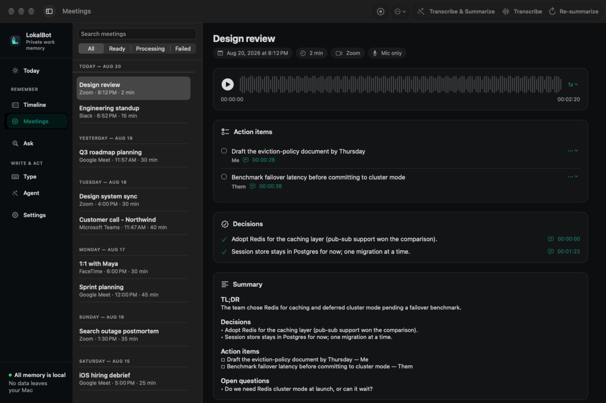

See what needs attention.
Today brings together your digest and outstanding actions. Review the day’s context and the evidence behind it.
Private work memory for Mac
Record both sides of a meeting without a bot. Get decisions, action items, and answers linked to the conversation — processed on your Mac by default.
Free and open source · Apple Silicon · macOS 15+
Models download during setup. Installation help · How privacy works

The useful part starts after the call
Keep the decision and its source together. When the details get fuzzy, ask your memory and open the moment behind the answer.
In this illustrative stand-up, the beta cut moves to Friday. Quick Recall answers a question about the agreement, includes the supporting quote, and links back to the meeting timestamp. The tour then shows bot-free capture, dictation, autocomplete, and an example network check with the built-in backend after model downloads.
An illustrative follow-up
The beta cut moved to Friday. Get a direct answer from the conversation.
Open the cited timestamp and hear the original agreement.
Use the decision to prepare a follow-up draft you can review before sharing.
Example data, shown to explain the workflow.
How it works
Capture your mic and meeting-app audio on separate tracks. No bot joins the call. Review detection settings and record with consent.
On-device models turn the recording into a transcript, recap, and evidence-linked decisions and actions.
Search or ask in plain language. Open the source, revisit the decision, and prepare your follow-up.
Your work stays yours
Built-in transcription and AI run on your Mac. Your library lives in local files and SQLite, with no LokalBot account, subscription, or telemetry.
Beyond meeting notes
Bring the same local memory into your day, your writing, and the next thing you need to do.
Today brings together your digest and outstanding actions. Review the day’s context and the evidence behind it.
Dictate at your cursor or accept an inline autocomplete suggestion. Each task uses its own local model role.
Prepare follow-ups, stand-ups, and work logs. Review the output and approve any Agent Mode actions.
Tab accepts a word. Esc dismisses. Shift + Tab moves back.
This scripted example demonstrates the interaction. In the app, your selected autocomplete model generates suggestions on your Mac by default.
Your next call is a good place to start
Download LokalBot, finish the model setup, and record a short test meeting. Review the recap and try asking about a decision.
Download for macOSFree · Apple Silicon · macOS 15+
With the built-in backend, meeting audio, transcripts, summaries, and workday context are processed locally. Model downloads, updates, optional Agent Mode setup, and approved network commands use the internet. A remote inference origin you approve receives the context for that request. Read the full boundary.
In v0.7.2, a fresh install selects automatic meeting detection and encrypted visual context. Capture still requires the corresponding macOS permissions. Review these settings before granting access; you can disable automatic recording or visual context. Upgrades retain saved preferences. See capture settings and retention.
An Apple Silicon Mac (M1 or later) with macOS 15 or newer. Your selected models determine the memory and disk space needed. Check your setup.
Install the app, then finish downloading the selected speech and language models. After setup, the built-in meeting workflow can work offline. Follow the installation checklist.
Yes. No LokalBot account or subscription. The full app is open source under GPLv3, and you can keep using your local library. Read the source.
Yes. Transcription, summaries, and autocomplete have separate model roles. Use the built-in choices or configure supported alternatives. Non-loopback inference requires approval for the exact server origin. Read the model guide.